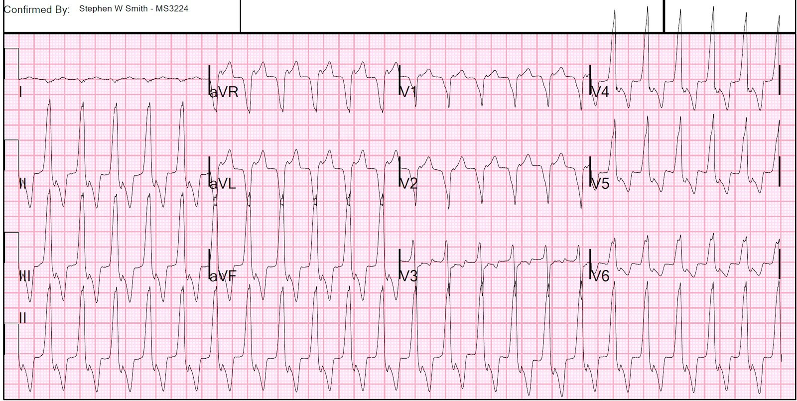
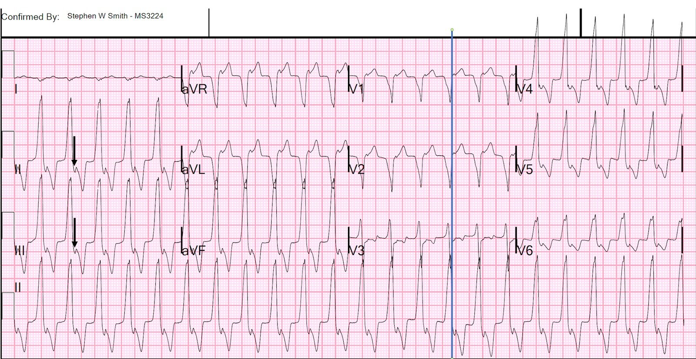
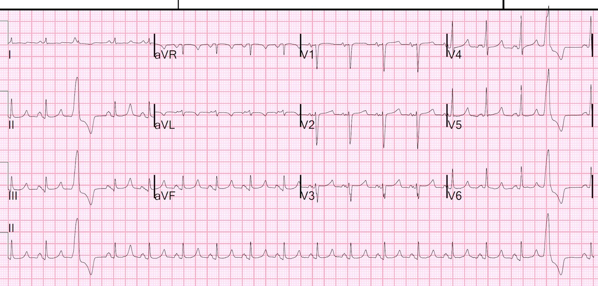
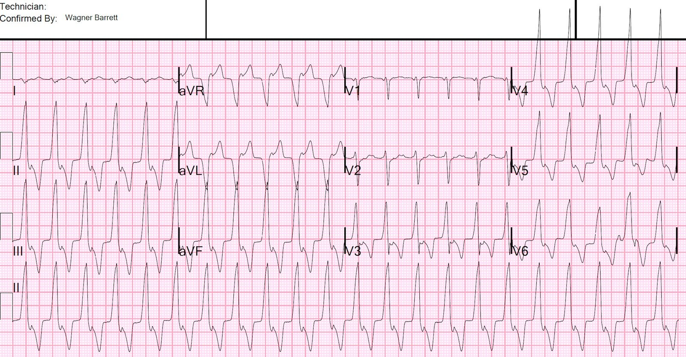
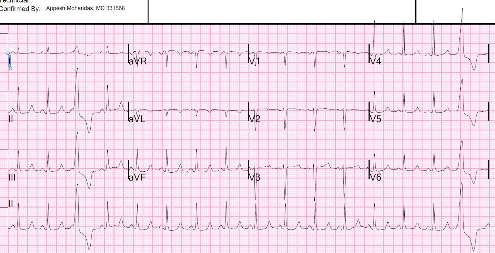

17/11/2021 — Đau răng, tình cờ phát hiện nhịp nhanh QRS rộng
Bản dịch tiếng Việt của bài "Toothache, incidental Wide Complex Tachycardia" – Dr. Smith’s ECG Blog. Giữ nguyên toàn bộ 5 hình ảnh của bản gốc.
Gần đây tôi đang xem qua danh sách các điện tâm đồ và bắt gặp bản ghi này:


Bạn nghĩ gì?
Đây là kết quả đọc tôi đã nhập vào hệ thống:
“Nhịp nhanh QRS rộng vào lại kèm sóng P ngược dòng, khởi đầu QRS chậm phù hợp với hoặc WPW ngược chiều (AVRT [người dịch: nguyên văn ghi “ARVT”, nhiều khả năng là lỗi đánh máy]) với đầu cắm của đường phụ ở phần trên thất phải, hoặc VT xuất phát từ phần trên thất phải, nhiều khả năng nhất là RVOT” (VT đường ra thất phải (Right Ventricular Outflow Tract VT), một trong các VT vô căn.
Giải thích:
Có nhịp nhanh QRS rộng đều với tần số 138. Sau đây là các đặc điểm quan trọng:
1. V1 và V2 có hình dạng LBBB (sóng R rất nhỏ hoặc không có, sóng S sâu)
2. V5 và V6 có hình dạng LBBB (sóng R một pha)
3. Trục hướng xuống dưới (dương hoàn toàn ở II, III, aVF)
4. Phần khởi đầu của QRS RẤT chậm (xem nhánh xuống chậm ở V1, V2, nhánh lên chậm ở các chuyển đạo khác).
Khởi đầu chậm này có nghĩa là nhịp này hoặc là VT hoặc là AVRT (nhịp nhanh vào lại nhĩ thất – Atrioventricular reciprocating tachycardia). AVRT là do một đường phụ (tương tự WPW, nhưng về mặt kỹ thuật chỉ những đường phụ có sóng delta trên điện tâm đồ nền mới được gọi là WPW), và khi QRS rộng thì là do dẫn truyền ngược chiều (đi xuống qua đường phụ gây tiền kích thích thất — sóng delta với QRS rộng). Chính phần khởi đầu của QRS là chậm — KHÔNG PHẢI phần sau.
Nếu đây là VT, thì nó xuất phát từ thất phải (vì có hình ảnh LBBB). VÀ nó xuất phát từ phần trên của thất phải nên xung động hướng xuống dưới (trục hướng xuống dưới). Đây là đặc điểm điển hình của VT đường ra thất phải. Một VT khác xuất phát từ thất phải và có hình ảnh LBBB là ARVD (loạn sản thất phải gây loạn nhịp – Arrhythmogenic Right Ventricular Dysplasia, hay bệnh cơ tim thất phải). Loại sau không nhất thiết có trục hướng xuống dưới.
Hình như RVOT còn được gọi là “VT đơn dạng lặp lại (Repetitive Monomorphic VT)” vì nó xuất hiện thành từng đợt hay từng loạt (salvo). Ở cuối cùng của bài, tôi đã dán một phần bài viết về chủ đề này từ UpToDate, nguồn tài liệu trực tuyến tôi yêu thích nhất.
Ở đây tôi chú thích trên điện tâm đồ để chỉ ra các sóng P ngược dòng


Các mũi tên chỉ vào điểm giữa, hay điểm đáy, của sóng P đảo ngược.
Sóng P đảo ngược không phải là thành phần dương của sóng, mà là chỗ lõm xuống.
Đường màu xanh được vẽ tại điểm khởi đầu của các sóng P đảo ngược
Ca bệnh tiếp diễn
Tôi đi tìm bệnh nhân; bà vẫn còn ở khoa và đây là câu chuyện:
Một phụ nữ 60 mấy tuổi, không có tiền sử bệnh tim, đến khám vì áp xe răng. Mạch lúc phân loại (triage) là 76. Bác sĩ nội trú năm nhất (intern) khai thác được tiền sử đau ngực 3 ngày trước nên đã chỉ định ghi điện tâm đồ. Bác sĩ nội trú không biết tần số tim lúc ghi điện tâm đồ cho tới khi bản ghi được ghi xong:
Các chất điện giải, bao gồm K và Mg, đều bình thường.
Bệnh nhân tự chuyển về nhịp xoang:


Giờ chúng ta thấy nhịp nhanh xoang kèm PVC, ngoài ra không có gì quá đáng chú ý.
Bạn nghĩ gì?
Suy nghĩ của tôi về điều này là các PVC có hình dạng GIỐNG HỆT nhịp nhanh QRS rộng. Điều này cho thấy ổ kích thích của cơn nhịp nhanh nằm trong thất, đúng tại vị trí của nhịp vào lại, và do đó điện tâm đồ đầu tiên là VT chứ không phải AVRT. Việc không có sóng delta tự nó chỉ ủng hộ chứ hoàn toàn không mang tính chẩn đoán, vì đường phụ thường không biểu hiện sóng delta trên điện tâm đồ nền. Hiện tượng này được gọi là “dẫn truyền ẩn.”
Xem bình luận bên dưới của bác sĩ điện sinh lý của chúng tôi về ý nghĩa của các PVC
Xin nhắc lại, không gọi là WPW khi có dẫn truyền ẩn; “WPW” chỉ dành cho những trường hợp có sóng delta. Tuy nhiên, dù là WPW hay không, đường phụ vẫn tạo ra một con đường khác cho dẫn truyền AV hoặc VA.
Ngay sau đó, bà lại vào cơn nhịp nhanh. Bà không có triệu chứng nhưng bị hạ huyết áp, 80/50.


Giống như trước. Và lần này nó không tự chuyển nhịp
Bạn muốn làm gì?
Đây gần như chắc chắn là RVOT, VT đường ra thất phải, và loại VT này đáp ứng với adenosine!! Vì vậy, nếu chúng ta có thể tin rằng bà sẽ không quay lại VT, adenosine có thể có hiệu quả. Tiếc thay, không có biện pháp điều trị tác dụng ngắn nào như adenosine hay sốc điện đạt được mục tiêu giữ bệnh nhân ở nhịp xoang.
Nhắc lại: cả sốc điện lẫn adenosine đều sẽ không có tác dụng chuyển nhịp. Không biện pháp nào giải quyết được vấn đề vì chúng ta biết rằng bà có thể chuyển từ nhịp xoang quay lại VT, vì bà đã làm vậy một lần rồi.
Do đó, cần một thuốc tác dụng kéo dài hoặc truyền tĩnh mạch liên tục (hoặc cả hai). Dựa trên kết quả nghiên cứu Procamio so sánh procainamide với amiodarone cho VT đơn dạng ổn định (với procainamide, hiệu quả gấp đôi và tác dụng bất lợi chỉ bằng một nửa), chúng tôi quyết định tiêm bolus procainamide (10 mg/kg trong 20 phút, có thể cho thêm một liều tới 7 mg/kg nếu cần) và truyền duy trì.
Cũng đã cho 2 g Mg.
Sau khi truyền chỉ mới 100 mg, bà lại chuyển nhịp. Bà duy trì nhịp xoang trong khi truyền thuốc.


Siêu âm tim:
–Ngoại tâm thu (ectopy) thường xuyên trong suốt lúc khám.
–Kích thước và bề dày thành thất trái bình thường.
–Chức năng tâm thu thất trái ở giới hạn dưới của bình thường với EF 52%.
–Không ghi nhận rối loạn vận động thành thất trái.
—Kích thước và chức năng thất phải bình thường.
—Áp lực tâm thu động mạch phổi ước tính là 34 mmHg + áp lực nhĩ phải.
–Dựa trên hình ảnh tĩnh mạch chủ dưới (IVC), áp lực nhĩ phải ước tính bình thường.
Kết cục:
Bệnh nhân từ chối thăm dò điện sinh lý (EP), nhưng bác sĩ điện sinh lý chắc chắn rằng đây là VT đường ra thất phải (RVOT VT). Họ cho bà xuất viện với diltiazem, thuốc hình như có hiệu quả rất tốt trong phòng ngừa các cơn RVOT VT tái phát (tôi không biết điều này và không thể tìm thấy tài liệu nào ở bất cứ nơi nào tôi đã tìm).
Đọc thêm tại đây: Idiopathic Ventricular Tachycardias for the EM Physician (Nhịp nhanh thất vô căn dành cho bác sĩ cấp cứu)
Bàn luận của bác sĩ điện sinh lý của chúng tôi
Smith: “Tôi đã nghĩ rằng nhịp nhanh QRS rộng (WCT) có thể là AVRT hoặc VT”
EP: “Hình dạng của AVRT ngược chiều về cơ bản sẽ giống như “VT” xuất phát từ vị trí đầu cắm vào thất của đường phụ. Do đó, các tiêu chuẩn truyền thống cho SVT kèm dẫn truyền lệch hướng không áp dụng được cho AVRT ngược chiều (ngoại trừ một điều: QRS đồng hướng âm thì không bao giờ có thể là AVRT!)”
Smith: “Nhưng rồi khi bệnh nhân chuyển nhịp và có các PVC với hình dạng giống hệt WCT, thì đó hẳn phải là VT chứ không phải AVRT”
EP: “Trong trường hợp tiền kích thích từng lúc, bạn có thể thấy cả phức bộ QRS rộng và hẹp trên cùng một điện tâm đồ – nhưng dĩ nhiên những phức bộ đó sẽ có sóng P đi trước (dù với khoảng PR ngắn)”
Smith: “Lập luận này có được bằng chứng ủng hộ không? Hay vẫn có khả năng là AVRT [người dịch: nguyên văn ghi “ARVT”, nhiều khả năng là lỗi đánh máy]?”
EP: “Không chắc, nhưng PVC từ RVOT và nhịp nhanh QRS rộng có cùng hình dạng gợi ý rất nhiều rằng đó là VT.
Một nhận xét khác trên điện tâm đồ là hoạt động nhĩ (được cho là) ngược dòng nằm khá xa so với nhát QRS rộng kế tiếp. Nói cách khác, nếu đây là AVRT, thì bạn đang giả định rằng khoảng “PR” rất dài và xung động dẫn truyền xuống qua đường phụ. Mặc dù có những đường phụ dẫn truyền chậm, tôi tin rằng chúng có xu hướng gây AVRT xuôi chiều nhiều hơn. Một ví dụ là “PJRT” mà có thể bạn đã gặp.
Đôi khi, nếu một người có nhát “tiền kích thích hoàn toàn” (tức là không có hỗn hợp với dẫn truyền qua nút AV), thì có thể khó phân biệt với một PVC vì sóng “P” có thể quá gần điểm khởi đầu QRS – nhưng tôi không nhớ đã gặp tình huống như vậy.”
Cuối cùng:
Nói chung, nếu bạn nghĩ một nhịp nhanh QRS rộng là AVRT ngược chiều, thì việc cho thuốc tác dụng lên nút AV là “chấp nhận được” vì nút AV vẫn tham gia vào vòng vào lại. Đó là lý do bạn có thể đã nghe một số người nhắc đến việc dùng adenosine như một nghiệm pháp chẩn đoán ngay cả trong nhịp nhanh QRS rộng nếu bệnh nhân ổn định huyết động (nếu nó không cắt được cơn nhịp nhanh, thì có thể làm lộ ra phân ly nhĩ thất nếu đó là VT!). Adenosine có gây giãn mạch phần nào, nên tôi sẽ không dùng nếu bệnh nhân đã bị hạ huyết áp.
VT ĐƠN DẠNG LẶP LẠI (REPETITIVE MONOMORPHIC VT), trích từ UpToDateVT đơn dạng lặp lại (RMVT) có đặc điểm là những “loạt” (salvo) ngắn, thường xuyên của VT đơn dạng không bền bỉ (dạng sóng 1). Nó được Gallavardin mô tả lần đầu vào năm 1922 và được y văn gọi bằng nhiều tên khác nhau như RMVT, nhịp nhanh thất phải, nhịp nhanh RVOT, VT nhạy cảm với catecholamine, VT nhạy cảm với adenosine và VT do gắng sức. Khoảng 10 đến 15 phần trăm số ca xuất phát từ đường ra thất trái [26-28].
Mặc dù RMVT được xem là xảy ra ở những trái tim “bình thường”, cộng hưởng từ tĩnh và cine thường phát hiện những bất thường cấu trúc nhẹ của thất phải, chủ yếu liên quan đến thành tự do (mỏng khu trú, thâm nhiễm mỡ và rối loạn vận động thành) [13-15]. Ý nghĩa chức năng của những thay đổi này chưa chắc chắn. Trong số ít ca được nghiên cứu, DNA từ sinh thiết cơ thất đều bình thường [29].
Dịch tễ học và đặc điểm lâm sàng — RMVT gần như chỉ xảy ra ở bệnh nhân trẻ đến trung niên không có bệnh tim cấu trúc [1,2,4-9]. Nhìn chung không có ưu thế theo giới tính, mặc dù một báo cáo ghi nhận nữ chiếm ưu thế với tỷ lệ 2:1 [26]. Một số lượng đáng ngạc nhiên vận động viên thi đấu (đặc biệt là người đua xe đạp) được ghi nhận trong nhiều loạt ca RMVT.
Các triệu chứng kèm theo thường gặp nhất là hồi hộp đánh trống ngực và choáng váng trong các cơn [5,6]. Trong một báo cáo minh họa gồm 18 bệnh nhân, mười hai người có rối loạn nhịp có triệu chứng, trong đó hai người bị ngất, và sáu người hoàn toàn không có triệu chứng.
Phần lớn các rối loạn nhịp là không bền bỉ (thường từ 3 đến 15 nhát), nhưng có tới một nửa số bệnh nhân có một số cơn bền bỉ, và một số bệnh nhân chỉ có VT bền bỉ [6,9,13,30]. (Xem ‘VT bền bỉ kịch phát’ bên dưới.)
Các đợt VT không bền bỉ thường bị khởi phát bởi stress cảm xúc hoặc gắng sức, thường xảy ra trong giai đoạn “hạ nhiệt” (warm-down) sau gắng sức, thời điểm catecholamine tuần hoàn ở mức đỉnh [5,6,8]. Cũng có thể có tính chất theo nhịp ngày đêm, với các đỉnh nổi bật từ 7 đến 11 giờ sáng và từ 4 đến 8 giờ chiều, tương ứng với các giai đoạn tăng hoạt động giao cảm [31]. Ở một số bệnh nhân, có thể xác định được một “cửa sổ” tần số tim then chốt (ngưỡng trên và ngưỡng dưới) dẫn đến sự xuất hiện của rối loạn nhịp [27].
Việc RMVT có thể bị gây ra bởi stress hoặc truyền catecholamine gợi ý một bất thường trong chức năng giao cảm của tim. Phù hợp với giả thuyết này là bằng chứng về sự mất phân bố thần kinh giao cảm khu trú ở tim ở một số bệnh nhân RMVT có tim bình thường về cấu trúc (năm trên chín người, so với không trên chín người ở nhóm chứng trong một báo cáo) [32]. Bệnh nhân RMVT cũng có thể có những vùng suy giảm tái hấp thu norepinephrine của tế bào thần kinh, dẫn đến tăng nồng độ catecholamine tại khe synap khu trú và giảm điều hòa thụ thể beta adrenergic của cơ tim [33].
Cũng có thể có các yếu tố khởi phát đặc thù theo giới. Trong một báo cáo gồm 47 nam và nữ bị RMVT, các trạng thái biến động nội tiết (tiền kinh nguyệt, thai kỳ, quanh mãn kinh, dùng thuốc tránh thai) là yếu tố khởi phát RMVT thường gặp nhất ở 59 phần trăm phụ nữ và là yếu tố khởi phát duy nhất nhận biết được ở 41 phần trăm [34]. Nam giới có nhiều khả năng hơn nữ giới trong việc xác định gắng sức, stress hoặc caffeine là yếu tố khởi phát (92 so với 41 phần trăm).
Vị trí khởi phát — Nhịp nhanh thất phải thường khởi phát từ phía vách của RVOT [6,26,28,35-38]. Một sơ đồ lập bản đồ chín vị trí của phần vách RVOT đã chứng tỏ hữu ích trong việc định vị nhịp nhanh RVOT dựa trên hình dạng trên điện tâm đồ 12 chuyển đạo (hình 1) [39].
Nhịp nhanh thất phải thường khởi phát từ một vùng rất hẹp ngay bên dưới van động mạch phổi ở phía trước của RVOT [37]. Lập bản đồ nội mạc ở những bệnh nhân này cho thấy vị trí hoạt hóa nội mạc sớm nhất nằm ở vùng này [6,9].
Ít gặp hơn, các vị trí khởi phát đã được lập bản đồ ở đường vào thất phải, thành tự do của RVOT, gốc động mạch phổi, xoang Valsalva trái và phải của động mạch chủ, thất trái, vòng van hai lá và các cơ nhú [26,36,38,40-49].
Đặc điểm điện tâm đồ — Tần số điển hình của RMVT dao động từ 140 đến 180 nhát/phút, và có thể thay đổi tùy theo nồng độ catecholamine. Độ dài chu kỳ VT thường kéo dài ra trước khi cơn kết thúc.
Đường ra thất phải — Phần lớn các cơn RMVT có hình ảnh điện tâm đồ đặc trưng với hai đặc điểm chính [1,2,4-9,39]:
●Blốc nhánh trái
●Trục hướng xuống dưới
Hình dạng này phù hợp với nguồn gốc RVOT được thấy qua triệt đốt qua ống thông và lập bản đồ nội mạc [6,37]. “Dấu ấn” điện tâm đồ này chiếm ít nhất 70 phần trăm tổng số VT vô căn [1].
Hình ảnh điện tâm đồ lúc khởi phát nhịp nhanh thất phải có thể cung cấp thông tin về vị trí khởi phát và cơ chế gây loạn nhịp, như được minh họa qua các nhận xét sau:
●Trong một loạt ca gồm 32 bệnh nhân bị RMVT do gắng sức, VT thường bắt đầu mà không có thay đổi độ dài chu kỳ. Các rối loạn nhịp khởi phát theo cách này có trục hướng xuống dưới, và dường như liên quan đến hoạt động khởi kích do hậu điện thế muộn [50]. So sánh, VT khởi phát bằng một chuỗi dài-ngắn thường không bền bỉ hơn và thường có trục hướng lên trên, gợi ý nguồn gốc ở thân hoặc vùng vách của thất; cơ chế của VT này có lẽ là hậu điện thế sớm.
●Trong một báo cáo gồm 14 bệnh nhân, những người có vị trí ở vách so với ở thành tự do ít có khả năng có khía ở phức bộ QRS hơn một cách có ý nghĩa (29 so với 95 phần trăm) và nhiều khả năng có vùng chuyển tiếp trước tim sớm, tại chuyển đạo V4 hoặc trước đó (79 so với 5 phần trăm) [51]. Ngoài ra, sóng R dương ở chuyển đạo I giúp phân biệt vị trí vách sau với vị trí vách trước và thành tự do.
●Mức độ tương đồng của dạng sóng điện tâm đồ 12 chuyển đạo giữa VT và bản đồ tạo nhịp (pace map) có thể được dùng để ước tính khả năng triệt đốt thành công tại vị trí đó. (Xem ‘Triệt đốt bằng sóng có tần số radio’ bên dưới.)
Phần lớn bệnh nhân nhịp nhanh thất phải có một hình dạng điện tâm đồ duy nhất [23]. Tuy nhiên, đôi khi có bệnh nhân biểu hiện nhiều hình dạng nhịp nhanh khởi phát từ các vị trí riêng biệt trong RVOT [52]. Sự hiện diện của nhiều hình dạng VT kiểu blốc nhánh trái, đặc biệt trong thăm dò điện sinh lý, nên gợi ý khả năng ARVC [23,53,54]. (Xem ‘Phân biệt với ARVC’ ở trên.)
Đường ra thất trái — Các tiêu chuẩn điện tâm đồ cũng đã được mô tả cho RMVT khởi phát từ LVOT [26,27]. Trong một loạt ca gồm 33 bệnh nhân RMVT, bốn người (12 phần trăm) có vị trí khởi phát ở thất trái, có thể dự đoán được bằng hai hình ảnh [26]:
●Hình dạng blốc nhánh phải, trục hướng xuống dưới, với sóng R một pha ở V1, khởi phát từ tam giác xơ trái (dạng sóng 2).
●Hình ảnh tương tự RMVT điển hình từ RVOT (blốc nhánh trái, trục hướng xuống dưới), ngoại trừ vùng chuyển tiếp trước tim sớm hơn (tại V2 đối với LVOT so với V3 hoặc muộn hơn đối với RVOT).
Các báo cáo khác đã mô tả những hình dạng QRS riêng biệt của VT vô căn khởi phát từ các xoang Valsalva [9,43,44]. Mặc dù có một số khác biệt giữa các cá thể, ngoại tâm thu thất (PVC; còn được gọi là nhát thất sớm hoặc khử cực thất sớm) khởi phát từ xoang vành trái của động mạch chủ có xu hướng âm ở chuyển đạo I và có hình ảnh chữ “w” ở V1, trong khi PVC có sóng R rộng ở V1 là đặc trưng của nguồn gốc từ lá vành phải của van động mạch chủ. Vùng chuyển tiếp sóng R trước tim sớm hơn nhiều khi VT khởi phát từ một trong hai xoang Valsalva của động mạch chủ so với từ RVOT, vì LVOT nằm phía sau RVOT [44].
Đặc điểm điện sinh lý — RMVT có thể được gây ra trong phòng thăm dò điện sinh lý, mặc dù thường không phải bằng kích thích theo chương trình [5,6,23,27,55]. Ở phần lớn bệnh nhân, các cơn bền bỉ hoặc không bền bỉ xảy ra khi đáp ứng với tạo nhịp nhĩ hoặc thất từng loạt (burst), và được tạo thuận lợi rất nhiều bởi truyền isoproterenol hoặc epinephrine [5,6,27,30,55].
Những nhận xét điện sinh lý này gợi ý rằng hoạt động khởi kích do hậu điện thế muộn, chứ không phải vào lại, là cơ chế của RMVT. Đáp ứng với các “nghiệm pháp dược lý” (pharmacologic probes) càng củng cố thêm giả thuyết này. RMVT đã được cắt cơn bằng adenosine, verapamil và thuốc chẹn beta, tất cả đều can thiệp vào dòng calci chậm đi vào qua trung gian cAMP [29,40,56-58].
Những nhận xét này phù hợp với giả thuyết cho rằng RMVT là hậu quả của hoạt động khởi kích gây ra bởi các hậu khử cực muộn (delayed after depolarizations, DADs) qua trung gian cAMP [30,59]. Sự gia tăng hoạt tính cAMP, ít nhất ở một số bệnh nhân, có thể là hậu quả của một đột biến tế bào sinh dưỡng mắc phải trên protein G ức chế G-alpha-i2 tại vị trí ổ gây loạn nhịp [59,60].
Tuy nhiên, việc các phép thăm dò này thiếu tính đặc hiệu và không có một đáp ứng đồng nhất ủng hộ đồng thuận chung rằng cơ chế của RMVT chưa được mô tả đầy đủ và có thể khác nhau giữa các cá thể. Bằng chứng bổ sung ủng hộ các cơ chế khác dựa trên nhận xét rằng ở một số bệnh nhân, cơn nhịp nhanh có thể kết thúc bằng tạo nhịp vượt tần số (overdrive pacing), kích thích sớm thất, hoặc điều biến thần kinh tự chủ bằng nghiệm pháp Valsalva hay xoa xoang cảnh [9].
Thăm dò điện sinh lý (EP) cũng có thể giúp phân biệt RMVT xảy ra khi không có bệnh tim cấu trúc với RMVT trong ARVC [23,24]. (Xem ‘Distinction from ARVC’ ở trên.)
Tiên lượng — Tiên lượng của RMVT gần như luôn tốt [4-9,55]. Những nhận xét sau đây từ các nghiên cứu ban đầu minh họa phạm vi các kết quả:
●Hai loạt ca ban đầu đánh giá 30 và 18 bệnh nhân [5,6]. Rối loạn nhịp đáp ứng với nhiều loại thuốc chống loạn nhịp, bao gồm các thuốc nhóm I và propranolol. Sau thời gian trung bình 30 tháng ở một nghiên cứu và trong khoảng 0.5 đến 8 năm ở nghiên cứu còn lại, không có trường hợp tử vong hay cơn ngừng tim nào [5,6].
●Báo cáo thứ ba gồm 24 bệnh nhân trẻ tuổi, phần lớn có nhịp nhanh thất phải và hai phần ba có triệu chứng [7]. Sau thời gian theo dõi trung bình 7.5 năm, ba bệnh nhân đột tử; không ai đang dùng thuốc chống loạn nhịp vào thời điểm đó. Các biến cố đột tử do tim (SCD) có thể là do chính RMVT, dù có thể nghiên cứu đã đưa vào cả những bệnh nhân mắc các hội chứng khác mà nay đã được biết là ác tính (ví dụ hội chứng Brugada, bệnh cơ tim thất phải gây loạn nhịp). Một khả năng khác là bệnh cơ tim do nhịp nhanh đã khiến bệnh nhân dễ bị thêm các rối loạn nhịp khác. (Xem “Arrhythmia-induced cardiomyopathy”.)
Biến thể ác tính — Các nghiên cứu gần đây hơn, trong đó ít khả năng có các hội chứng khác nói trên, đã xác định một biến thể ác tính của RMVT. VT đa dạng và VF, vốn là các rối loạn nhịp ác tính, đã được ghi nhận ở bệnh nhân RMVT [61,62]. Trong một loạt ca, ba bệnh nhân RMVT sau đó xuất hiện VF. Ở những bệnh nhân này, các PVC có khoảng ghép với nhát bóp trước đó ngắn hơn so với thường gặp trong RMVT [61]. Người ta cho rằng các nhát khởi kích tương đối sớm đã xảy ra trong thời kỳ dễ tổn thương của quá trình tái cực, dẫn đến VF.
Trong một báo cáo sau đó, 16 bệnh nhân có PVC thường xuyên xuất phát từ RVOT được ghi nhận có VT đa dạng hoặc VF khởi phát bởi một trong các PVC đó [62]. Khác với nghiên cứu thứ nhất, khoảng ghép của các PVC ở những bệnh nhân xuất hiện rối loạn nhịp ác tính không khác so với 85 bệnh nhân RMVT khác không có rối loạn nhịp ác tính. Triệt đốt bằng sóng có tần số radio (RF) đã loại bỏ thành công các PVC từ RVOT ở 13 bệnh nhân và làm thay đổi các PVC ở ba bệnh nhân còn lại. Trong thời gian theo dõi trung bình 54 tháng, không ai bị VF hay ngất tái phát. (Xem ‘Radiofrequency ablation’ ở dưới.)
Tỷ lệ hiện mắc của biến thể ác tính này, và việc nó có phải là một rối loạn riêng biệt với RMVT hay không, vẫn chưa rõ. Tần suất cao trong nghiên cứu trên (16 trên 101 bệnh nhân) có lẽ bị ước tính quá cao đáng kể do sai lệch chuyển tuyến. Ngoài ra, có thể một số ca được xếp vào VT đa dạng thực ra chỉ là dạng VT đường ra thất phải (RVOT VT) thường gặp, trong đó hình dạng QRS thay đổi trong cơn nhịp nhanh do dao động của điều kiện tải. Một bài xã luận đi kèm báo cáo này đã đề cập vấn đề liệu nay có nên cân nhắc triệt đốt RF cho mọi bệnh nhân RMVT hay không [63]. Do PVC từ RVOT có tỷ lệ hiện mắc tương đối cao, còn VT/VF ác tính từ RVOT thì hiếm, nên hợp lý khi tập trung quan tâm vào những bệnh nhân có các đặc điểm nguy cơ cao hơn sau đây:
●Tiền sử ngất
●VT rất nhanh (>230 nhịp/phút)
●Ngoại tâm thu (ectopy) rất thường xuyên (>20,000 PVC/ngày)
●PVC có khoảng ghép ngắn
Điều trị RMVT — Các quyết định điều trị RMVT cần cân nhắc rằng nhiều bệnh nhân còn trẻ và ngoài ra vẫn khỏe mạnh. Vì vậy, điều trị triệt đốt có thể được ưu tiên hơn so với dùng thuốc chống loạn nhịp kéo dài.
Điều trị nội khoa — Điều trị nội khoa có hai vai trò trong RMVT: cắt cơn rối loạn nhịp; và phòng ngừa tái phát. RMVT có thể được cắt cơn bằng adenosine và thuốc chẹn beta, tất cả đều can thiệp vào dòng calci chậm đi vào qua trung gian cAMP [29,40,56-58].
Để phòng ngừa tái phát, thuốc chẹn beta thường được dùng làm thuốc đầu tay. Các thuốc này hấp dẫn vì có hồ sơ tác dụng phụ nhẹ so với các thuốc chống loạn nhịp [64].
Propranolol đã phòng ngừa được tái phát ở tới 14 trên 22 bệnh nhân có RMVT xuất phát điển hình từ RVOT [6,65]. Tuy nhiên, các nghiên cứu khác lại thấy các thuốc này ít có khả năng phòng ngừa RMVT tái phát hơn nhiều, dù phối hợp thuốc chẹn beta với một thuốc nhóm I có thể hữu ích [9,55].
Thuốc chống loạn nhịp nhóm I (bảng 2) dùng đơn độc có ích ở một số bệnh nhân. Tuy nhiên, các thuốc nhóm III (sotalol và amiodarone) có thể được ưu tiên hơn, nhất là ở bệnh nhân có rối loạn nhịp kháng trị với các thuốc khác [9].
Triệt đốt bằng sóng có tần số radio — Do thuốc chống loạn nhịp có hiệu quả hạn chế và có thể gây tác dụng phụ, triệt đốt bằng sóng có tần số radio (RF) ngày càng được dùng nhiều ở bệnh nhân RMVT có triệu chứng. Các hướng dẫn của hội chuyên ngành về xử trí rối loạn nhịp thất và phòng ngừa đột tử do tim (SCD) chỉ ra rằng có bằng chứng và/hoặc đồng thuận chung ủng hộ triệt đốt RF ở bệnh nhân VT vô căn có triệu chứng và kháng thuốc, hoặc ở những bệnh nhân như vậy mà không dung nạp thuốc hay không muốn điều trị thuốc lâu dài [64].
Tuyên bố Đồng thuận Chuyên gia HRS/EHRA/APHRS/LAHRS năm 2019 về Triệt đốt qua ống thông các Rối loạn nhịp thất khuyến cáo triệt đốt qua ống thông ở những bệnh nhân VT vô căn và không có bệnh tim cấu trúc sau đây [66,67]:
●Bệnh nhân có triệu chứng nặng với VT đơn dạng.
●VT đơn dạng ở bệnh nhân mà thuốc chống loạn nhịp không hiệu quả, không dung nạp được, hoặc bệnh nhân không muốn dùng.
●Bệnh nhân có VT đa dạng bền bỉ và VF tái phát (bão điện) kháng trị với điều trị chống loạn nhịp khi nghi ngờ có một yếu tố khởi kích có thể nhắm tới để triệt đốt.
Tỷ lệ thành công của triệt đốt qua ống thông bằng RF dao động từ 80 đến 100 phần trăm [28,35,36,40,41,68]. Tỷ lệ thành công phụ thuộc một phần vào vị trí của ổ; triệt đốt qua ống thông các VT vô căn ở vị trí không điển hình nhìn chung không thành công bằng ở các vị trí thuộc RVOT [36]. Mức độ tương đồng của dạng sóng điện tâm đồ 12 chuyển đạo giữa VT và bản đồ tạo nhịp (pace map) có thể được dùng để ước tính khả năng triệt đốt thành công tại vị trí đó [69]. Độ lệch tuyệt đối trung bình >12 phần trăm gợi ý mức khác biệt đủ lớn để không nên triệt đốt tại vị trí đó.
Mặc dù đã triệt đốt thành công nhịp nhanh đường ra thất trái (LVOT) bằng đường tiếp cận nội tâm mạc, việc lập bản đồ qua tĩnh mạch vành và các đường tiếp cận qua da vào khoang màng ngoài tim đã cho thấy một số VT này xuất phát từ thượng tâm mạc thất trái [28,45,46,68,70]. Cũng đã có một số báo cáo về triệt đốt thành công RMVT từ xoang Valsalva trái và phải [43].
Triệt đốt bằng sóng có tần số radio nhìn chung có tỷ lệ biến chứng thủ thuật thấp [28,35-38,40]. (Xem “Overview of catheter ablation of cardiac arrhythmias”, section on ‘Complications’.)
Dữ liệu theo dõi lâu dài ở bệnh nhân được điều trị thành công bằng triệt đốt qua ống thông bằng sóng có tần số radio còn hạn chế. Trong hai báo cáo gồm 42 bệnh nhân được triệt đốt thành công mọi cơn nhịp nhanh, chỉ năm người (12 phần trăm) được phát hiện tái phát trong thời gian theo dõi từ 2 đến 50 tháng [68,71].
Khả năng triệt đốt thành công có thể thấp hơn khi vị trí khởi phát không nằm ở nội tâm mạc hoặc không được xác định chắc chắn trong quá trình lập bản đồ [68]. Trong một tổng quan 75 bệnh nhân được cho là có RVOT VT, việc không xác định được ổ, và do đó tỷ lệ thành công, có tương quan với thời gian QRS ở chuyển đạo V2 [72]. Tỷ lệ thành công là 95 phần trăm khi thời gian QRS ở V2 trong lúc lập bản đồ tạo nhịp ≥160 ms, so với chỉ 54 phần trăm khi thời gian QRS <160 ms. Trong kinh nghiệm này, các chiến lược triệt đốt bên trái và thượng tâm mạc không được tiến hành.
Triệt đốt thượng tâm mạc — Một cách giải thích khả dĩ cho triệt đốt bằng sóng có tần số radio thất bại là rối loạn nhịp xuất phát từ một ổ ở thượng tâm mạc chứ không phải ở nội tâm mạc. Trong một báo cáo về triệt đốt thất bại (thủ thuật thất bại cấp hoặc rối loạn nhịp tái phát muộn) ở 30 bệnh nhân VT (15 người có tim có vẻ bình thường), việc đưa dụng cụ vào khoang màng ngoài tim qua đường dưới mũi ức đã được dùng cho cả lập bản đồ lẫn triệt đốt thượng tâm mạc [70]. Hai mươi bốn VT có vẻ xuất phát từ thượng tâm mạc; 17 VT được triệt đốt thành công, còn bảy VT còn lại có vị trí không tiếp cận được, chủ yếu do bị tiểu nhĩ trái cản trở. Sáu trong bảy bệnh nhân này có thể được triệt đốt từ lá vành trái (left coronary cusp).
VT BỀN BỈ KỊCH PHÁTVT bền bỉ kịch phát là một hội chứng lâm sàng khác của nhịp nhanh thất phải vô căn, giống RMVT ở nhiều mặt [6,9,13,73]. Hình dạng QRS hay gặp nhất là blốc nhánh trái với trục hướng xuống dưới, và vị trí khởi phát điển hình là phần trên của mặt vách RVOT. Hơn nữa, bệnh nhân VT bền bỉ kịch phát dường như đáp ứng với thuốc chống loạn nhịp, đặc biệt là adenosine, theo cách tương tự bệnh nhân RMVT, dù dữ liệu còn hạn chế [73].
Do những điểm tương đồng này, chưa rõ VT bền bỉ kịch phát có phải là một hội chứng lâm sàng riêng biệt hay không. So với RMVT không bền bỉ, rối loạn này thường có triệu chứng hơn và ít khi bị gắng sức khởi phát hơn. Nó cũng thường được gây ra bằng kích thích theo chương trình hơn, dù isoproterenol có thể tạo thuận lợi cho việc gây cơn ở một số trường hợp.
Mặt khác, một số nhà nghiên cứu bác bỏ sự tồn tại của VT bền bỉ kịch phát như một hội chứng riêng biệt với RMVT. Chẳng hạn, một nghiên cứu thấy 58 phần trăm bệnh nhân RMVT có ít nhất một cơn VT bền bỉ [9]. Ngoài ra, thăm dò điện sinh lý có thể tái tạo VT bền bỉ ở bệnh nhân chỉ biểu hiện VT không bền bỉ (đặc biệt khi truyền isoproterenol) hoặc ngược lại. Cũng có ý kiến cho rằng tỷ lệ đột tử do tim trong RMVT thực ra là do chồng lấp với VT bền bỉ kịch phát. Vì những lý do này, hai hội chứng đôi khi được xem chung là nhịp nhanh thất phải vô căn, hoặc đơn giản là RMVT.